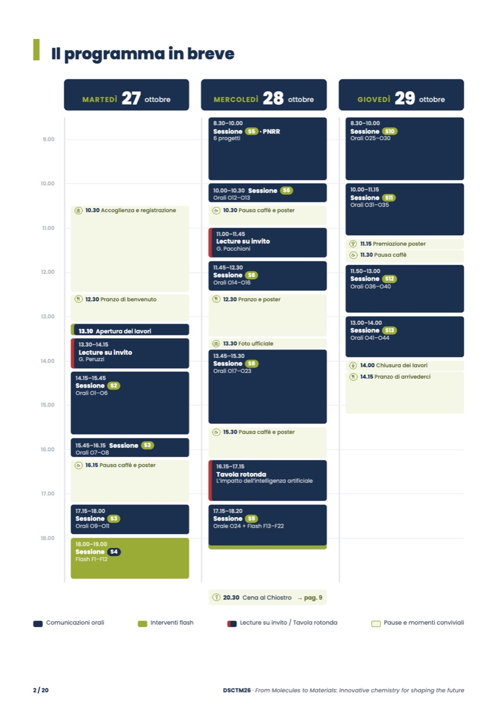
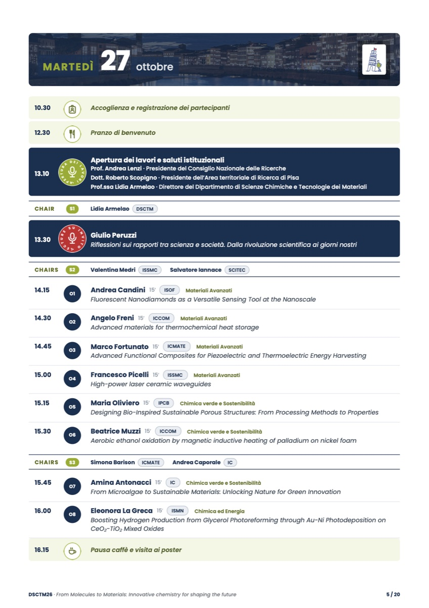
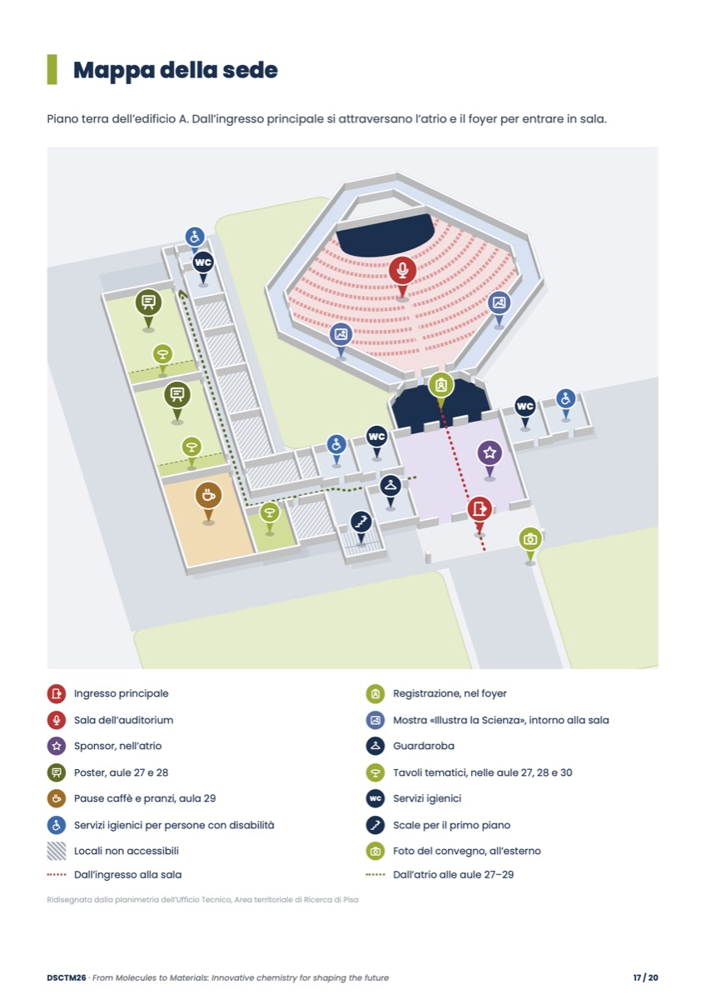

IL PROGETTOCASE STUDYEvent & Conference Design
Giornate Scientifiche DSCTM 2026
«From Molecules to Materials: Innovative chemistry for shaping the future»
27–29 ottobre 2026 · Auditorium dell'Area territoriale di Ricerca di Pisa27–29 October 2026 · Auditorium of the Area territoriale di Ricerca di Pisa
👥 comitato organizzatore · grafica e strumenti digitali miei👥 organizing committee · graphics and digital tools by me
Le Giornate Scientifiche sono il convegno del Dipartimento di Scienze Chimiche e Tecnologie dei Materiali (DSCTM) del CNR. Nel 2026 ho fatto parte del comitato organizzatore e mi sono occupato di tutto ciò che il pubblico vedeva e usava: dall'identità grafica al programma, dalla mappa della sede agli schermi in sala e al totem dell'ingresso, oltre a una parte dell'organizzazione.
The Giornate Scientifiche are the conference of CNR's Department of Chemical Sciences and Materials Technology (DSCTM). In 2026 I was on the organizing committee and took care of everything the audience saw and used: from the visual identity to the programme, from the venue map to the screens in the hall and the entrance totem, plus part of the organization.
Il convegno in numeriThe conference in numbers
- 43comunicazioni oralioral talks
- 22interventi flashflash talks
- 6progetti PNRRPNRR projects
- 2lecture su invitoinvited lectures
- 1tavola rotonda sull'intelligenza artificialeround table on artificial intelligence
- 89posterposters
01cosa ho realizzatowhat I made
Dalla carta agli schermiFrom paper to screens
Un'unica identità, declinata su tutto quello che i partecipanti hanno visto in tre giorni.
One identity, applied to everything participants saw over three days.
Grafica e stampaGraphics & print
-
01
Locandina e identità graficaPoster & visual identity
Progettate da me: un disegno a linea continua con lo skyline di Pisa e la mascotte del convegno. La stessa grafica è diventata locandina, copertina del programma, cartelli e schermi.
Designed by me: a continuous-line drawing of the Pisa skyline with the conference mascot. The same artwork became the poster, the programme cover, the signage and the screens.
-
02
Programma ufficialeOfficial programme
Libretto A4 di 20 pagine, impaginato da me e aggiornato fino al giorno dell'evento, con un registro delle modifiche per tenere traccia di ogni versione.
A 20-page A4 booklet that I laid out and kept updated until the day of the event, with a change log to track every version.
-
03
Mappa della sedeVenue map
Disegnata in prospettiva, con percorsi, aule dei poster e servizi. Usata nel programma, nei cartelli e sugli schermi.
Drawn in perspective, with routes, poster rooms and facilities. Used in the programme, on the signs and on the screens.
-
04
CartelliSignage
Mappa A3, programma in breve, elenchi dei poster per aula, segnaletica dei locali, cartelli Wi-Fi.
A3 map, programme at a glance, poster lists by room, room signage, Wi-Fi signs.
DigitaleDigital
-
05
SchermiScreens
Pagine che funzionano anche senza internet, per il proiettore e i monitor laterali dell'auditorium (relatore, sessione e chair, sponsor, premiazione poster) e per i monitor del foyer.
Pages that work even without internet, for the projector and the side monitors in the auditorium (speaker, session and chair, sponsors, poster awards) and for the foyer monitors.
-
06
Totem touch all'ingressoTouch totem at the entrance
Il programma da sfogliare, sincronizzato con l'ora della giornata, e un cruciverba giocabile.
The programme to browse, synced with the time of day, plus a playable crossword.
OrganizzazioneOrganization
-
07
Dietro le quinteBehind the scenes
- Wi-Fi ospiti, con l'assegnazione delle credenziali registrata come richiede la legge
- Guest Wi-Fi, with credential assignments logged as required by law
- Raccolta delle presentazioni dei relatori per la regia
- Collecting the speakers' presentations for the control room
- Scalette nominative per i chair
- Named running orders for the chairs
- Comunicazioni a relatori e partecipanti
- Communications to speakers and participants
* Schermi e totem erano strumenti interni all'evento e non sono pubblici.
* The screens and the totem were internal to the event and are not public.
02il programmathe programme
20 pagine, una versione finale20 pages, one final version
Quattro delle venti pagine, così come sono state stampate. Il libretto completo è sul sito del Dipartimento.
Four of the twenty pages, as they were printed. The full booklet is on the Department's website.


